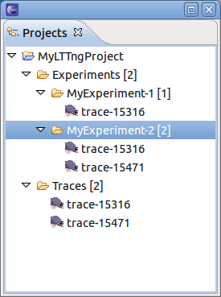
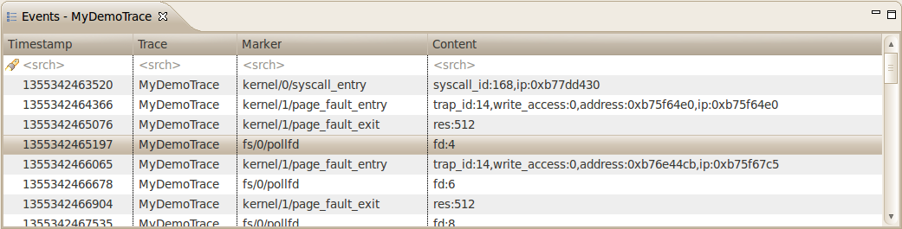

| User Interface | ||
|---|---|---|
|
|
|
|
| Getting Started | Limitations | |
This section describes the LTTng Perspective and its specific views as well as the LTTng Trace Control that is integrated in the Remote System Explorer perspective.
The LTTng perspective groups the LTTng specific views, namely:
The views are synchronized i.e. selecting an event, a timestamp, a time range, etc will update the other views accordingly.

The perspective can be opened from the Eclipse Open Perspective dialog (Window > Open Perspective... > Other).

The project view displays the LTTng projects of the current workspace.
Two folders are always present: Traces and Experiments.

A new LTTng project can be created using the LTTng Project dialog (File > New > Project... or the context menu)


The Traces folder holds the set of traces available for experiments. Traces are imported in the LTTng project using an import wizard triggered by a context menu.
Note: An LTTng trace is actually a composite of multiple channel traces grouped under a folder. It is the folder that has to be imported.

The Experiment folder holds the set of experiments of the project. Experiments are created from the Experiment context menu and are configured from the experiment's context menu.

The Events View shows the basic trace data in chronological order in a tabular format.
The header displays the current trace (or experiment) name. The table displays the following fields:
The first row of the table is the header row a.k.a. the Search and Filter row.

The highlighted event is the current event and is synchronized with the other views. If you select another event, the other views will be synchronized accordingly.
Searching and filtering of events in the table can be performed by entering matching conditions in one or multiple columns in the header row (the first row below the column header).
To toggle between searching and filtering, click on the 'search' (
 ) or 'filter' (
) or 'filter' (
 ) icon in the header row's left margin, or right-click on the header row and select
Show Filter Bar or
Show Search Bar in the context menu.
) icon in the header row's left margin, or right-click on the header row and select
Show Filter Bar or
Show Search Bar in the context menu.
To apply a matching condition to a specific column, click on the column's header row cell, type in a regular expression and press the ENTER key. You can also enter a simple text string and it will be automatically be replaced with a 'contains' regular expression.
When matching conditions are applied to two or more columns, all conditions must be met for the event to match (i.e. 'and' behavior).
To clear all matching conditions in the header row, press the DEL key.
When a searching condition is applied to the header row, the table will select the next matching event starting from the top currently displayed event. Wrapping will occur if there is no match until the end of the trace.
All matching events will have a 'search match' icon in their left margin. Non-matching events will be dimmed.

Pressing the ENTER key will search and select the next matching event. Pressing the SHIFT-ENTER key will search and select the previous matching event. Wrapping will occur in both directions.
Press ESC to cancel an ongoing search.
Press DEL to clear the header row and reset all events to normal.
When a filtering condition is entered in the head row, the table will clear all events and fill itself with matching events as they are found from the beginning of the trace.
A status row will be displayed before and after the matching events, dynamically showing how many matching events were found and how many events were processed so far. Once the filtering is completed, the status row icon in the left margin will change from a 'stop' to a 'filter' icon.

Press ESC to stop an ongoing filtering. In this case the status row icon will remain as a 'stop' icon to indicate that not all events were processed.
Press DEL or right-click on the table and select Clear Filters from the context menu to clear the header row and remove the filtering. All trace events will be now shown in the table. Note that the currently selected event will remain selected even after the filter is removed.
You can also search on the subset of filtered events by toggling the header row to the Search Bar while a filter is applied. Searching and filtering conditions are independent of each other.
The Histogram View displays the trace events distribution with respect to time. When streaming a trace, this view is dynamically updated as the events are received.

On the top left, there are two data controls:
Both control can be used to modify their respective value. After validation, the other controls and views will be synchronized and updated accordingly.
The large histogram, at the bottom, shows the event distribution over the whole trace or set of traces. It also has a smaller semi-transparent window, with a cross-hair, that shows the currently selected time range window. The time range window can be zoomed in/out by using the mouse wheel. It can also be selected by the mouse and dragged to another region of the trace.
The smaller histogram, on top right, corresponds to the currently selected time range window, a sub-range of the event set. Its size can also be zoomed in/out using the mouse wheel.
The x-axis of each histogram corresponds to the events timestamps. The timestamp of the first and the last event of the respective ranges is displayed. The y-axis of each histogram shows the minimum/maximum number of events in the corresponding histogram bars.
The dashed vertical magenta bar, on the right, shows the position of the last event. The dashed vertical red bar shows the relative position of the currently selected event. The current event can be changed by clicking on the histogram.
Hovering the mouse over an histogram bar pops up an information window that displays the start/end time of the corresponding bar as well as the number of events it represents.
In each histogram, the following keys are handled:
The Control Flow View is applicable to kernel trace data. It displays the list processes in tabular format, sorted by PID, as well as their state transitions over time in a Gantt chart format.

The tool bar options from left to right are:
The process table displays the following fields:
The graphical part shows the state of the corresponding process a la Gantt: the color represents the process state and the length of the bar represents the time span during which the process was in that state. The header corresponds to a time axis. Note that depending on the scale or zooming factor, some pixels might represent more (in fact many, many more) than just one state.
Here's a list of possible colors and their corresponding process state:


The Resources View is applicable to kernel trace data. It displays the list system resources in tree format, grouped by trace, as well as their state transitions over time in a Gantt chart format.

The tool bar options from left to right are:
The resource tree displays the system resources whose state transitions were collected in the trace.
The graphical part shows the state of the corresponding resources a la Gantt: the color represents the resource state and the length of the bar represents the time span during which the resource was in that state. The header corresponds to a time axis. Note that depending on the scale or zooming factor, some pixels might represent more (in fact many, many more) than just one state.
Here's a list of possible colors and their corresponding process state:

The Statistics View displays the various event counters that are collected when analyzing a trace. The data is organized per trace.

The functions to control the LTTng tracer (e.g. start, pause, resume), either locally or remotely, are available from the Remote Systems view (See Remote Systems View, an RSE view).

The LTTng tracer is controlled by the UI through an LTTng agent running on the tracer system.
A new connection to a remote system can be created using the new connection wizard of the Remote System Explorer. For this, a toolbar button exists on the top left corner of the Remote System view. Alternatively, this wizard can be started using File -> New -> Other ... -> Remote System Explorer -> Connection).

For LTTng control, select connection type LTTng and press Next to define the connection.

The Host name holds the IP address or DNS name of the remote system. The Connection name is the name to be displayed in the Remote Systems view. The Description is optional. Unless the user wants to use a specific Profile, the default profile is sufficient. The checkbox Verfiy host name enable or disables the verification of the remote system.
By default, when pressing "Finish" the new connection contains the following sub systems:
The user has the possibility to configure or omit the subsystems Files, Processes, Shells and Terminals by pressing "Next" and deselecting the relevant subsystem.


After finishing the new connection the Remote System view will be updated:

All actions are on elements in the Remote Systems view are accessible through context sensitive menu. By selecting a tree element and pressing the right mouse button a context sensitive menu is shown. Some of the actions are also available through toolbar buttons and toolbar menu.
The connection to the remote host can be established by selecting the connection in the tree, click the right mouse button and select Connect.

A login dialog will be opened, where the user needs to specify the user name and password.

After logging in the LTTng Trace Control will retrieve LTTng Remote System information. First it will read the supported providers. The providers will be one or both of the following: "kernel" for kernel tracing and "ust" for user space tracing. After that the trace controls reads the currently available targets. For kernel tracing, there is only one target with ID "0". For user space tracing each target is the corresponding process ID of a user space application with user space tracing enabled. Without any traces created the Remote System view will look like this (after expanding the tree):

The marker of a given target can be configured by selecting the kernel target "0", clicking the right mouse button and selecting the Configure Markers menu item of the context sensitive menu.

A new dialog box will show for the configuration of the relevant markers. All markers are listed in a table. The first column contains a checkbox to enable or disable a marker. The second column shows the name of the marker and all other columns display marker details.

A new trace can be created by selecting the kernel target "0", clicking the right mouse button and selecting the New Trace menu item of the context sensitive menu.

A new dialog box will show for the configuration of the relevant parameter.

If all inputs are valid the Finish button will be active and can be used to create the trace. The LTTng trace control will setup the trace using the connection to the remote agent.
After creating a new trace, the Remote Systems view will be updated. When selecting the newly created trace in the tree, the buttons to start, stop and configure the trace will be enabled.

Some of the trace parameters can be changed if the trace has not been previously started. A trace can be configured by selecting the relevant kernel trace, clicking the right mouse button and selecting the "Configure Trace" menu item of the context sensitive menu.

A new dialog box with a wizard page will show for the configuration of the relevant parameter. For explanation of the parameters see Create_a_New_Kernel_Trace

After entering valid parameters the Next and Finish buttons will be active. To finalize the configuration of the trace select the Finish button. To configure channel parameters select the Next button. A new wizard page will show for the configuration of channel parameters. For provider kernel the following display will show:

All channels can be configured at once by clicking the right mouse button in the table and selecting one of the menu items of the context sensitive menu.

For provider ust only the channel parameter Channel Timer can be configured and the following display will show after selecting the Next button of the Trace configuration page.

Please note that channel parameters cannot be retrieved from the LTTng agent. Therefore they cannot be displayed in the table unless they have been previously configured through Eclipse. However, this information will be lost after closing Eclipse. A question mark will indicate that the relevant value is not known and it will be ignored after selecting the Finish button.
Please note that the Configure Trace item of the context sensitive menu of a trace can be used to display the trace and channel parameters at any time. However, they can only be changed if the trace has not been previously started.
A configured or paused trace can be started by selecting the kernel trace, clicking the right mouse button and selecting the Start menu item of the context sensitive menu. Alternatively, the start button in the toolbar can be used to start the trace. If the trace location is host (streaming trace), it will be automatically added to the tracing project that was selected at trace creation.

A started trace can be paused by selecting the relevant trace, clicking the right mouse button and selecting the Pause menu item of the context sensitive menu. Alternatively, the pause button in the toolbar can be used to pause the trace.

A non-started trace can be stopped by selecting the relevant trace, clicking the right mouse button and selecting the Stop menu item of the context sensitive menu. Alternatively, the stop button in the toolbar can be used to stop the trace. This will destroy the trace on the remote system, all allocated memory will be deallocated and all relevant trace files will be finalized. This step is need to be able to import a trace into the LTTng Perspective.

A streaming or stopped trace can be imported to the LTTng Perspective for viewing by selecting the relevant trace, clicking the right mouse button and selecting the Import To Project menu item of the context sensitive menu. A new dialog box will show to select the LTTng Project.

For local trace path (streamed to the host):

For remote trace path (stored on the target):

After pressing button Import the trace will be stored in the selected project. For a trace stored on the target, it will be downloaded from the remote system.
A stopped trace can be deleted by selecting the relevant trace, clicking the right mouse button and selecting the Delete menu item of the context sensitive menu. A new dialog box will show for the user to confirm that the selected trace should be deleted.


The Property view displays the properties of the selected resource in the tree. For traces it displays all configuration parameters.

|
|

|
|
| Getting Started | Limitations |